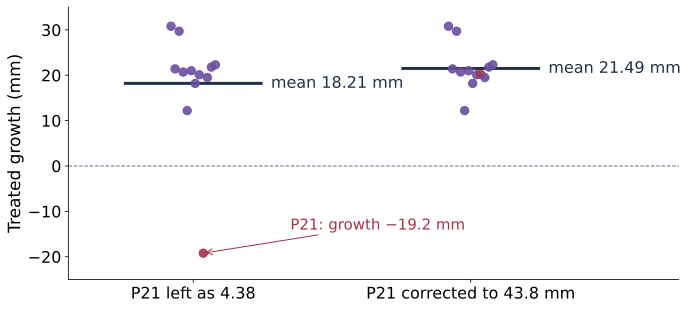

A labmate exports the seedling measurements from the lab spreadsheet and sends you the file. You calculate the group means and email them to your supervisor. A week later someone notices that one plant appears twice and one length was typed in centimetres. R never complained: it calculates a precise-looking answer from whatever table it is given. How do you know the table is fit to calculate from?
Today you will:
inspect a raw file as text before turning it into numbers;
repair only what source evidence supports, in a script, keeping the original file unchanged;
keep an unknown value unknown, and count plant records and usable measurements separately;
save and re-check the cleaned file so that someone else can trace every change.
Week 3 is about describing data. The checked table and these habits carry into Days 12–15 and into the comparisons of week 4.
The problem: one slip changes the result
In the export, plant P21’s final length is 4.38. The source notebook says 43.8 mm: the value was typed in centimetres.
Left as it is, P21 “grew” −19.2 mm.
That one cell pulls the treated mean from 21.49 mm down to 18.21 mm.
R prints both numbers with the same confidence. Only a check against the source tells them apart.

Treated growth values with P21 left as 4.38 (one point far below zero, group mean 18.21 mm) and with P21 corrected to 43.8 mm (group mean 21.49 mm).
Keep the original; repair in a script
Never edit the raw CSV by hand. Keep it exactly as received.
Make each repair in day11-cleaning.R and write a new derived file.
For every changed value, the trail is: observation → evidence → action → check.
Then you, a supervisor or a reviewer can see each change, why it was made, and rerun it.
Preserve the raw CSV, explain the changes in a repair script, and recreate a separate clean CSV.
dim(): 25 rows, 4 columns, but the study has 24 plants.
unique() lists each different value once: four spellings of two treatments. Reading every column as text (col_character()) and keeping spaces (trim_ws = FALSE) makes "treated " visible.
count() counts the rows for each plant ID; filter(n > 1) keeps IDs that occur more than once: P01.
write_csv() prints nothing. list.files() shows the new file in output/.
Reading it back checks the saved file, the one a colleague receives: 24 plants, no repeated ID (anyDuplicated() gives 0), one unknown growth.
Then restart R and rerun the whole script. The raw CSV still has 25 rows; the cleaned CSV has 24.
A new file is a new source to check
A second class sends data/seedlings-transfer.csv: 18 plants, 9 per group.
Before importing, write down what you expect: what one row is, which ID must be unique, column names, units, allowed labels. Then check and record what you observe.
No source note reports an error in this file, so no correction is justified.
An unusual value: inspect it, keep it, and ask the recorder.
Initial against final length for the eighteen transfer plants, coloured by control and treated group; a new study needs its own checks.
Summary
Concept
Key fact
Inspect first
Read as text (col_character(), trim_ws = FALSE); unique(), count() reveal labels and repeated IDs
Evidence
A value is changed only when a source record supports it, never because it looks odd
Raw file
Never edited; repairs live in a script that writes a separate derived file
Duplicates
Compare all fields and the design; distinct() only for confirmed identical rows
Missing
Unknown stays NA; a zero is a claim (P06 would “grow” −24.7 mm)
Counts
24 plant records, 23 usable growths; report the n behind every mean
Check
Read the saved file back; restart R and rerun the script
Next (Day 12, variation): with a table we can trust, we describe how much individual plants differ from each other, not only their average.
Now:open the Day 11 exercises. Leave with day11-cleaning.R, output/seedlings-cleaned.csv and your cleaning notes.